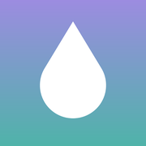

NewbeePrivacy Policy
Effective November 10, 2026
Newbee is a feeding tracker for babies, made by Robby Jones ("we"). This policy explains what happens to the information you enter in the app. The short version: we don't collect any of it.
What we collect
Nothing. Newbee has no account, no server, no analytics, no advertising and no tracking. We don't receive your feeding logs, your baby's name or photo, your settings, or any information about how you use the app.
Where your data is stored
Everything you enter is stored on your device: feeds, bottles, pumping sessions, notes, your baby's nickname, birth date and photo, and your settings. Your iPhone's own security, such as your passcode and data protection, keeps it private. The baby photo is chosen with the iOS photo picker, which gives Newbee only the photo you pick, not your photo library.
iCloud sync
When you're signed in to iCloud, Newbee also keeps this data in your own private iCloud storage, so it appears on your other iPhones and iPads signed in to the same Apple ID. It's stored by Apple under your Apple Account and Apple's privacy policy. We can't see it, and it isn't sent to us or anyone else. To keep data on one device only, turn off iCloud for Newbee in the iPhone Settings app → your name → iCloud.
When data leaves your iPhone
Apart from iCloud sync, only when you choose to send it. If you export a PDF report or CSV file and share it, for example with your pediatrician, it goes wherever you send it, and that recipient's own privacy practices apply.
If you back up your iPhone with iCloud or a computer, your backup may include Newbee's data, under Apple's privacy policy. If you've chosen to share diagnostics with app developers in your iPhone's settings, Apple may share anonymous crash reports with us. These never include your feeding data.
Notifications and Live Activities
Feeding reminders are scheduled on your iPhone. The timer on the Lock Screen and in the Dynamic Island is shown by your iPhone. Neither uses a server.
Children
Newbee is meant for parents and caregivers. It doesn't collect personal information from anyone, including children.
Deleting your data
Go to Newbee → Settings → Your data → Delete all data. With iCloud sync on, this also deletes the data from your iCloud and your other devices. Deleting the app removes the data from that device only; to remove it from iCloud too, use Delete all data first, or delete Newbee's data in the iPhone Settings app → your name → iCloud → Manage Account Storage.
Changes
If this policy changes, for example if we add sharing with a partner, we'll update this page and the date above before the change reaches the app.
Contact
Questions about privacy? Email newbee.app.help@gmail.com.